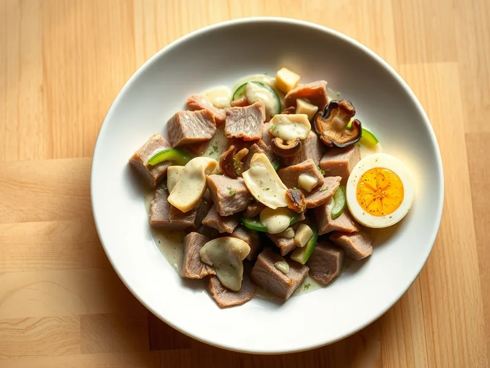

Салат с говяжьим языком, огурцом и грибами
Праздничный салат из отварного языка, жареных грибов, свежего огурца и яиц
210 мин6 порц.367 ккал на порциюБ 20 · Ж 30 · У 6Русская кухня
Открыть в приложении: порции, таймеры, список покупок
Продукты на 6 порц.
- Говяжий язык500 г
- Огурцы2 шт
- Шампиньоны250 г
- Лук репчатый1 шт
- Яйцо куриное3 шт
- Майонез120 г
- Растительное масло1,5 ст. л.
- Лавровый лист2 шт
- Соль1 ч. л.
- Перец чёрный молотыйпо вкусу
- Вода3000 мл
Как готовить
- Залейте язык холодной водой, доведите до кипения на сильном огне, снимите пену и варите на слабом огне 2,5-3 часа. За 15 минут до конца добавьте соль и лавровый лист.
- Готовый язык сразу опустите в холодную воду на 2-3 минуты и снимите кожу, она должна легко отходить. Остудите.
- Лук нарежьте кубиком, грибы пластинками. Обжарьте лук на масле на среднем огне 4 минуты, добавьте грибы и жарьте 10 минут до румяности. Остудите.
- Яйца сварите вкрутую 10 минут, остудите и нарежьте кубиком.
- Язык и огурцы нарежьте тонкой соломкой.
- Соедините язык, огурцы, грибы и яйца, заправьте майонезом, посолите и поперчите по вкусу.
Совет. Если кожа с языка снимается плохо, значит, он недоварен: верните его в кипящий бульон ещё на 20-30 минут. Бульон от языка годится для супа.